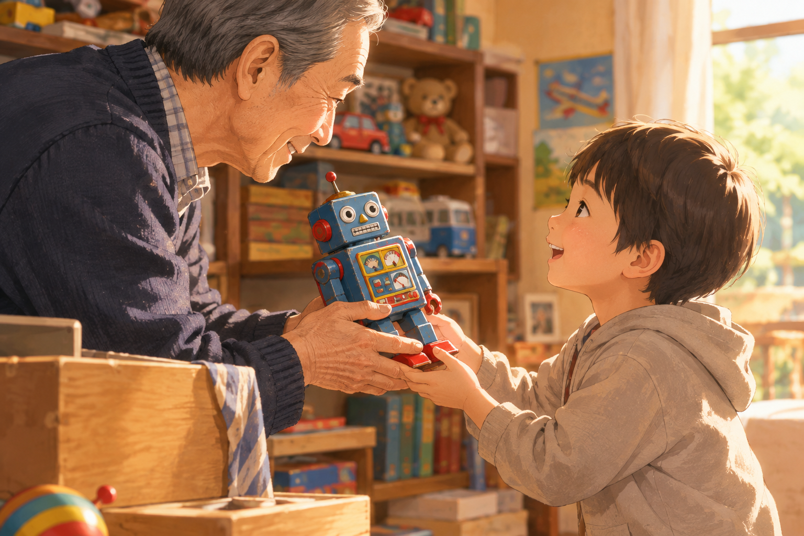
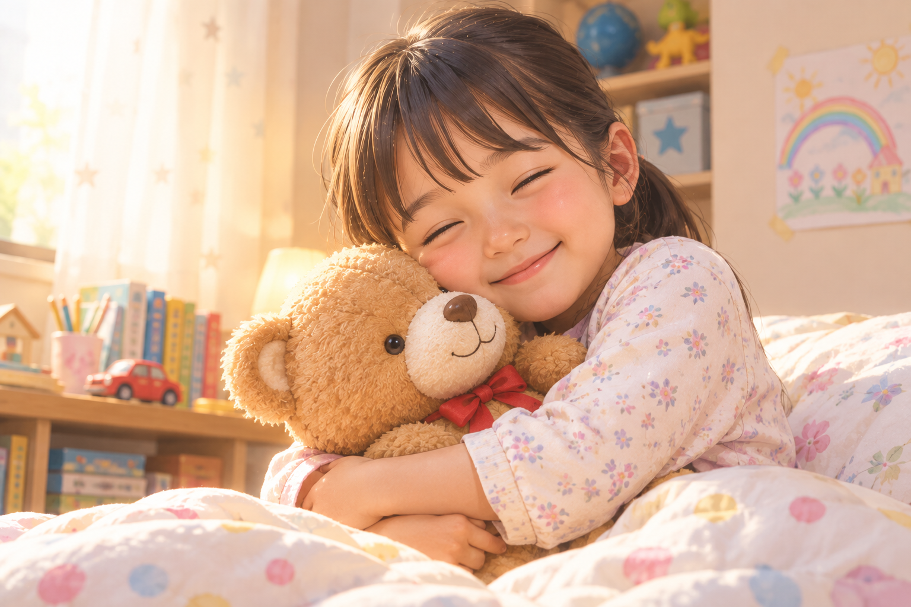
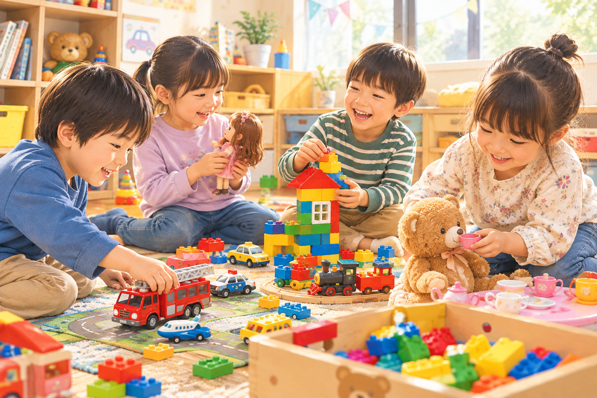
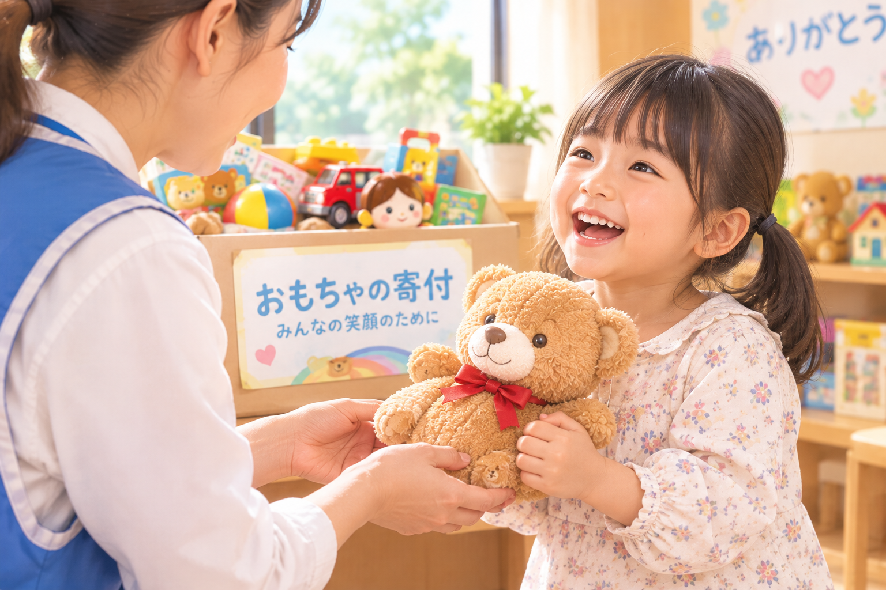
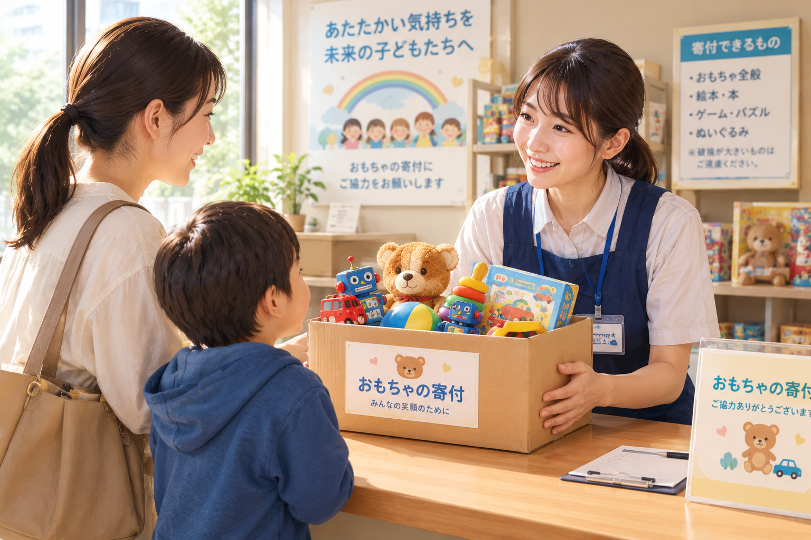

大切にしていたおもちゃを捨てるのは
辛い…。
まだまだ遊べるがもう管理するのは…と
お悩みの方々にご提案です。
おもちゃのイトーでは、おもちゃのバトンという活動を行っています。
具体的には養護施設や保育施設へおもちゃの寄付をする慈善活動です。

修理窓口に在中しているスタッフへお声がけ
ください。
おもちゃの寄付をされる旨を伝え、お譲り予定のお品物を確認させて頂きます。
問題なければ、お品物をこちらで清掃・補修し
施設へと寄付いたします。
お譲りしていただけることはとても感謝して
おります。
しかし、稀に小さなお子様には危険と判断される物をお持ちいただくことがあります。
その場合、申し訳ありませんがスタッフと協議しお品物をお返しすることがあります。
ご了承ください。
下記には以前持ち込まれ、お返しした物を書き出しています。